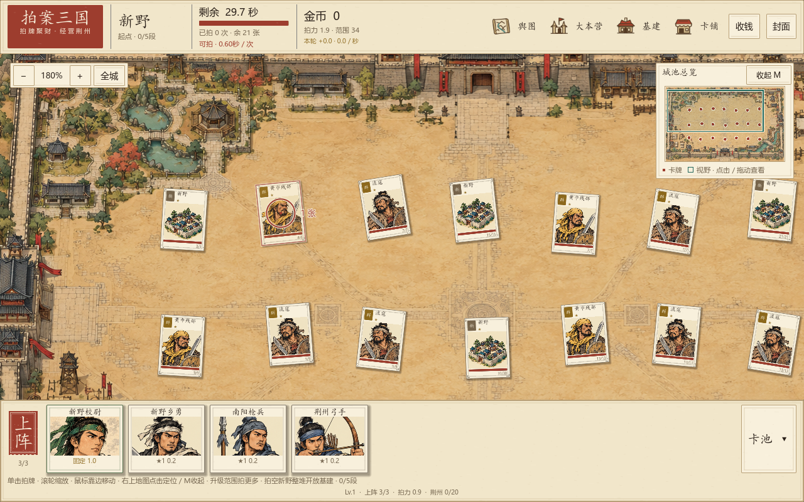
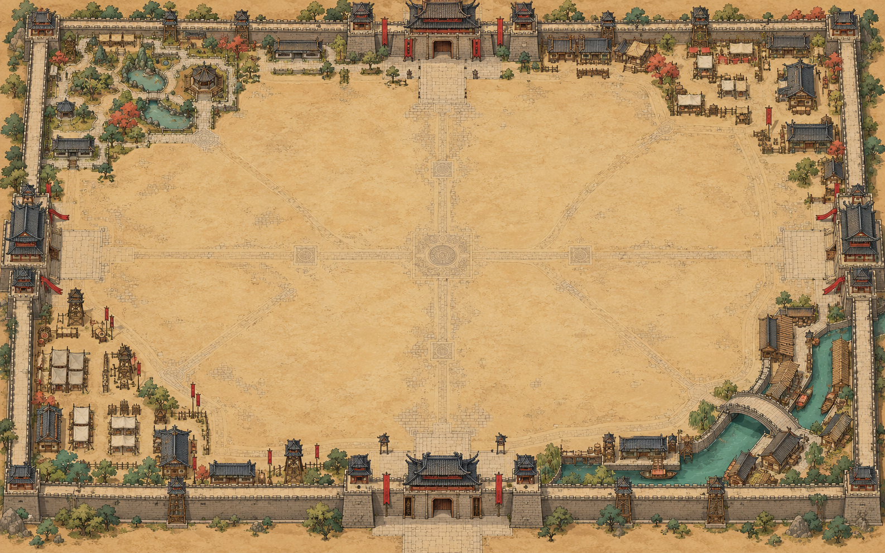

拍案三国 · v2.3 · 2026.10.09
巡城寻牌，掌风落在街巷
卡牌分散在城内空地，彼此留出间距。滚轮缩放，鼠标靠近场地边缘移动镜头；右上角小地图显示全城牌点与当前视野，也可以收起来。
右上角地图 · 展开、收起、定位
左键圆圈拍牌滚轮以鼠标位置缩放鼠标靠边巡游城池M收起 / 展开小地图点击 / 拖动定位全城恢复完整视野

这是 Godot 实机截图。点图可查看原尺寸；四个按钮切换同一版本的不同地图状态。拍击圈与卡牌一起缩放，升级范围才会增加实际覆盖面积。
为什么推荐放右上角
本游戏底部已有上阵卡条。把小地图放在右上角，既能随时查看剩余牌的位置，又为底部留出空间；暂时不需要时收成一个“地图 M”按钮。
| 方案 | 适用方式 | 本游戏中的取舍 |
|---|---|---|
| 右上角可收起 · 本轮采用 | 持续提供全城概览；标题、按钮或快捷键切换。 | 避开底部上阵条。展开时显示牌点和视野框，收起后保留入口。 |
| 右下角常驻 | 地图与底部操作区集中，适合那里留有空间的界面。 | 这里会挤占上阵条与卡池空间；较矮窗口更容易拥挤。 |
| 全屏或半透明地图 | 集中查看全城路线、街区与远处目标。 | 概览面积大，但会遮挡拍牌场地；更适合需要时短暂打开。 |
以上取舍根据本项目界面作出。不同游戏会使用不同角落：小地图位置案例研究，第4页列举右上与右下等位置。Factorio 开发日志也说明了将地图信息放在旁边、保留正常地图交互的方案。
新生成的完整城池 · 已接入游戏

卡牌、红点、视野框与光标由游戏实时绘制。完整提示词与素材路径已保存。


回归测试
城池探索 208 / 208城池范围 230 / 230赚钱循环 438 / 438升级页 160 / 160卡牌美术 5569 / 5569
以上五组检查通过，错误数为0。覆盖卡牌间距、滚轮缩放、边缘移动、小地图坐标与收起展开，以及原有范围拍击、赚钱与升级规则。